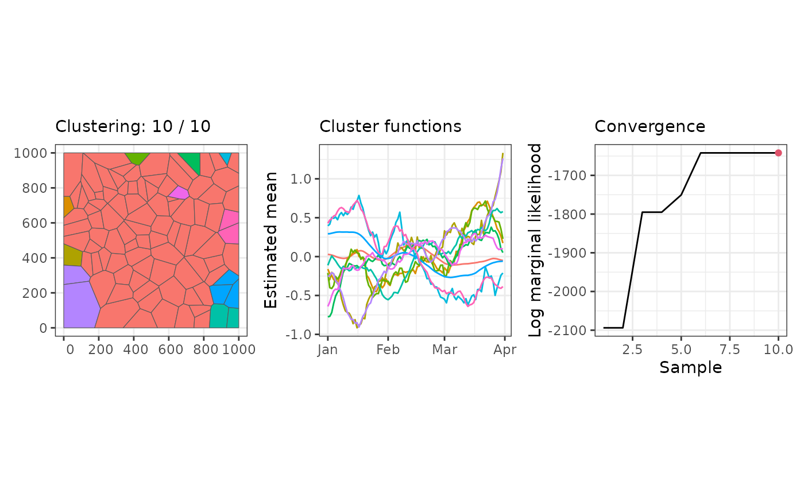
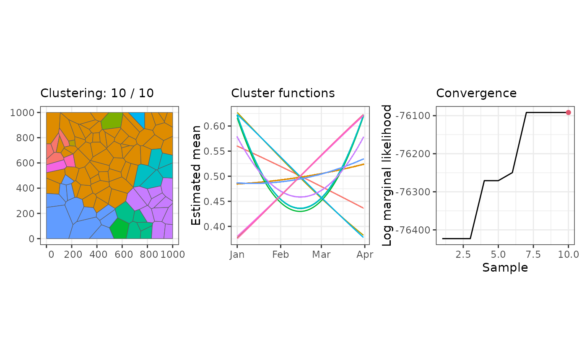

Bayesian detection of neighboring spatial regions with similar functional shapes using
spanning trees and latent Gaussian models. It ensures spatial contiguity in the
clusters, handles a large family of latent Gaussian models supported by inla, and
allows to work with non-Gaussian likelihoods.
Arguments
- stdata
A stars object containing response variables, covariates, and other necessary data.
- graphdata
A list containing the initial graph used for the Bayesian model. It should include components like
graph,mst, andmembership(default isNULL).- stnames
A character vector specifying the spatio-temporal dimension names of
stdatathat represent spatial geometry and time, respectively (default isc("geometry", "time")).- move_prob
A numeric vector of probabilities for different types of moves in the MCMC process: birth, death, change, and hyperparameter moves (default is
c(0.425, 0.425, 0.1, 0.05)).- logpen
A negative numeric value representing the log-scale penalty for increasing the number of clusters by one. The number of clusters is assumed to follow a geometric prior with probability
q, making this penalty equal tolog(1 - q). For example, iflogp = -50, then a proposal that increases the number of clusters will only be favored if it improves the log marginal likelihood by more than 50.- correction
A logical indicating whether correction to compute the marginal likelihoods should be applied (default is
TRUE). This depend of the type of effect inclused in theINLAmodel.- niter
An integer specifying the number of MCMC iterations to perform (default is
100).- burnin
An integer specifying the number of burn-in iterations to discard (default is
0).- thin
An integer specifying the thinning interval for recording the results (default is
1).- nmessage
An integer specifying how often progress messages should be printed (default is
10).- path_save
A character string specifying the file path to save the results (default is
NULL).- nsave
An integer specifying the number of iterations between saved results in the chain (default is
nmessage).- ...
Additional arguments such as
formula,family, and others that are passed to theinlafunction.
Value
An sfclust object containing two main lists: samples and clust.
The
sampleslist includes details from the sampling process, such as:membership: The cluster membership assignments for each sample.log_marginal_likelihood: The log marginal likelihood for each sample.move_counts: The counts of each type of move during the MCMC process.
The
clustlist contains information about the selected clustering, including:id: The identifier of the selected sample (default is the last sample).membership: The cluster assignments for the selected sample.models: The fitted models for each cluster in the selected sample.
Details
This implementation draws inspiration from the methods described in the paper: "Bayesian Clustering of Spatial Functional Data with Application to a Human Mobility Study During COVID-19" by Bohai Zhang, Huiyan Sang, Zhao Tang Luo, and Hui Huang, published in The Annals of Applied Statistics, 2023. For further details on the methodology, please refer to:
The paper: doi:10.1214/22-AOAS1643
Supplementary material: doi:10.1214/22-AOAS1643SUPPB
The MCMC algorithm in this implementation is largely based on the supplementary material provided in the paper. However, we have generalized the computation of the marginal likelihood ratio by leveraging INLA (Integrated Nested Laplace Approximation). This generalization enables integration over all parameters and hyperparameters, allowing for inference within a broader family of distribution functions and model terms, thereby extending the scope and flexibility of the original approach. Further details of our approach can be found in our paper "Bayesian spatial functional data clustering: applications in disease surveillance" by Ruiman Zhong, Erick A. Chacón-Montalván, Paula Moraga:
The paper: https://arxiv.org/abs/2407.12633
Author
Ruiman Zhong ruiman.zhong@kaust.edu.sa, Erick A. Chacón-Montalván erick.chaconmontalvan@kaust.edu.sa, Paula Moraga paula.moraga@kaust.edu.sa
Examples
# \donttest{
library(sfclust)
# Clustering with Gaussian data
data(stgaus)
result <- sfclust(stgaus, formula = y ~ f(idt, model = "rw1"),
niter = 10, nmessage = 1)
#> Iteration 1: clusters = 10, births = 0, deaths = 0, changes = 0, hypers = 0, log_mlike = -1295.25478118879
#> Iteration 2: clusters = 9, births = 0, deaths = 1, changes = 0, hypers = 0, log_mlike = -1254.15930271047
#> Iteration 3: clusters = 9, births = 0, deaths = 1, changes = 0, hypers = 0, log_mlike = -1254.15930271047
#> Iteration 4: clusters = 10, births = 1, deaths = 1, changes = 0, hypers = 0, log_mlike = -1038.07772493223
#> Iteration 5: clusters = 10, births = 1, deaths = 1, changes = 0, hypers = 0, log_mlike = -1038.07772493223
#> Iteration 6: clusters = 11, births = 2, deaths = 1, changes = 0, hypers = 0, log_mlike = -886.210206401372
#> Iteration 7: clusters = 11, births = 2, deaths = 1, changes = 0, hypers = 1, log_mlike = -886.210206401372
#> Iteration 8: clusters = 11, births = 2, deaths = 1, changes = 0, hypers = 1, log_mlike = -886.210206401372
#> Iteration 9: clusters = 11, births = 2, deaths = 1, changes = 0, hypers = 1, log_mlike = -886.210206401372
#> Iteration 10: clusters = 11, births = 2, deaths = 1, changes = 0, hypers = 1, log_mlike = -886.210206401372
print(result)
#> Within-cluster formula:
#> y ~ f(idt, model = "rw1")
#>
#> Clustering hyperparameters:
#> log(1-q) birth death change hyper
#> -0.6931472 0.4250000 0.4250000 0.1000000 0.0500000
#>
#> Clustering movement counts:
#> births deaths changes hypers
#> 2 1 0 1
#>
#> Log marginal likelihood (sample 10 out of 10): -886.2102
summary(result)
#> Summary for clustering sample 10 out of 10
#>
#> Within-cluster formula:
#> y ~ f(idt, model = "rw1")
#>
#> Counts per cluster:
#> 1 2 3 4 5 6 7 8 9 10 11
#> 80 1 1 5 2 1 1 1 5 2 1
#>
#> Log marginal likelihood: -886.2102
plot(result)

# Clustering with binomial data
data(stbinom)
result <- sfclust(stbinom, formula = cases ~ poly(time, 2) + f(id),
family = "binomial", Ntrials = population, niter = 10, nmessage = 1)
#> Warning: Log marginal-likelihood correction not required.
#> Iteration 1: clusters = 9, births = 0, deaths = 1, changes = 0, hypers = 0, log_mlike = -76059.6237202677
#> Iteration 2: clusters = 9, births = 0, deaths = 1, changes = 1, hypers = 0, log_mlike = -75981.5138547954
#> Iteration 3: clusters = 9, births = 0, deaths = 1, changes = 1, hypers = 0, log_mlike = -75981.5138547954
#> Iteration 4: clusters = 9, births = 0, deaths = 1, changes = 1, hypers = 0, log_mlike = -75981.5138547954
#> Iteration 5: clusters = 9, births = 0, deaths = 1, changes = 1, hypers = 0, log_mlike = -75981.5138547954
#> Iteration 6: clusters = 9, births = 0, deaths = 1, changes = 1, hypers = 0, log_mlike = -75981.5138547954
#> Iteration 7: clusters = 10, births = 1, deaths = 1, changes = 1, hypers = 0, log_mlike = -75620.1013156549
#> Iteration 8: clusters = 10, births = 1, deaths = 1, changes = 1, hypers = 0, log_mlike = -75620.1013156549
#> Iteration 9: clusters = 10, births = 1, deaths = 1, changes = 1, hypers = 0, log_mlike = -75620.1013156549
#> Iteration 10: clusters = 10, births = 1, deaths = 1, changes = 1, hypers = 0, log_mlike = -75620.1013156549
print(result)
#> Within-cluster formula:
#> cases ~ poly(time, 2) + f(id)
#>
#> Clustering hyperparameters:
#> log(1-q) birth death change hyper
#> -0.6931472 0.4250000 0.4250000 0.1000000 0.0500000
#>
#> Clustering movement counts:
#> births deaths changes hypers
#> 1 1 1 0
#>
#> Log marginal likelihood (sample 10 out of 10): -75620.1
summary(result)
#> Summary for clustering sample 10 out of 10
#>
#> Within-cluster formula:
#> cases ~ poly(time, 2) + f(id)
#>
#> Counts per cluster:
#> 1 2 3 4 5 6 7 8 9 10
#> 64 1 1 1 2 8 1 1 19 2
#>
#> Log marginal likelihood: -75620.1
plot(result)

# }